13 estilos · 1 escena · SVG animado
La misma escena —granjero, conejo, pájaro, coles, cerca y carretilla— dibujada por el motor vectorial en los trece lenguajes. El estilo cambia el color, la letra y el aire; la escena sigue siendo papel.












